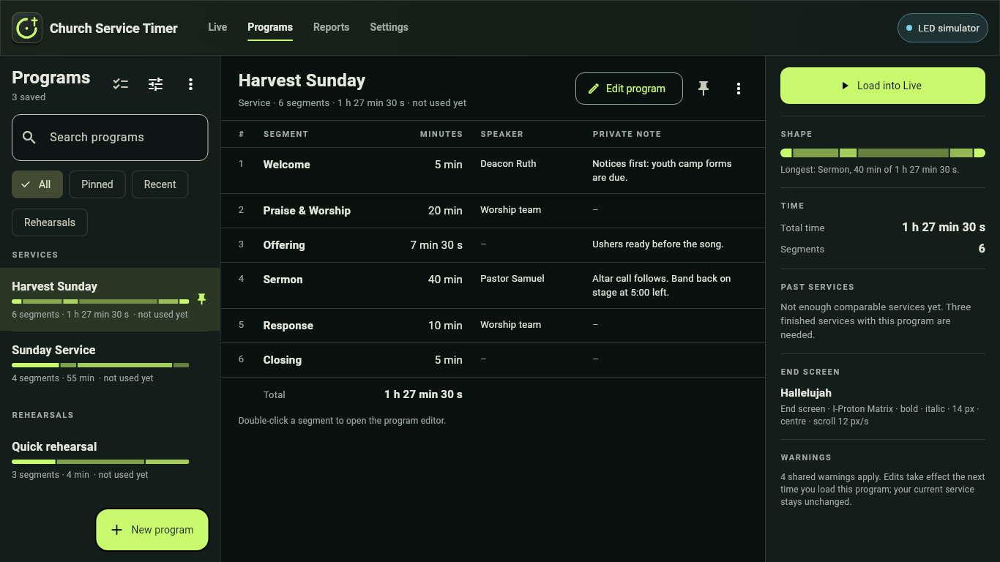

Open Programs and tap New program. (With no programs at all, Programs offers Create program and Import.) In Program editor, give the plan a useful Program name; “Youth sunday” is the example placeholder, not a mandatory name.
- Choose Service or Rehearsal as its Program group.
- Use Add segment for each activity, in the order it will happen. Enter a Segment name and set its duration in minutes and seconds, for example 5 min 30 s. Each segment stays within 59 min 59 s.
- Add a Speaker (optional) and Private operator notes where useful: microphone changes, music cues or an agreed finish instruction. Notes are never shown on the sign.
- Turn on Protect duration for a segment that time recovery must not shorten.
- Reorder segments using the drag handles ("Drag the handle to reorder" appears once there are two or more).
- Review the End screen row. It reads "Uses the current default" until you give this program its own end screen.
- Choose Create program for a new plan, or Save changes after editing.
Example practice plan:
| Segment | Duration | Speaker / private preparation note |
|---|---|---|
| Welcome | 2 min | Host · have microphone 1 ready. |
| Worship | 5 min 30 s | Worship lead · confirm final song with the team. |
| Message | 8 min | Speaker · send the agreed wrap-up cue. |
| Closing | 2 min | Host · confirm announcements before closing. |

Open a row in Programs for Program details, with Load into Live and Edit program up front. Its ⋮ menu holds Check this service, Duplicate, Export JSON, Export CSV, Print order of service, Send to paired phone (while one is connected), Version history and Delete program, which asks for confirmation. A duplicate is useful for a special service without overwriting a familiar plan.
In the Programs list, the pin icon marks pinned programs, which Live offers first. Press and hold a program (click and hold on a PC) to start selecting; the bar at the bottom then offers Pin, Share, Export and, in red, Delete (with a 10-second Undo). Back or × finishes selecting.
Segment library. For segments you use often, such as Offering or Announcements, open the segment in the editor and tap Save to library. It keeps the duration, speaker, notes and protection. From library next to Add segment inserts one into any program, with search. Saving the same name again updates it. Programs › ⋮ › Segment library lists them and removes one, with Undo. Up to 50 are kept.
Version history. Each time you save a change, the version before it is kept, up to the last 10. Program details › ⋮ › Version history lists them with what changed (for example “Added “Offering”, +4 min in total”). Tap one to open it as "Earlier version" and choose Restore this version, with Undo. Restoring keeps the current name, and the version it replaces stays in history.
Unfinished program edits are saved locally as drafts after a short delay ("Draft saved" appears once you change something). On reopening, choose Restore draft, Discard draft, or Cancel. Restoring is not the same as saving the program. If a save fails, keep the app open and use its retry action. The latest keystrokes can be lost if the app is closed before a pending write completes.
Importing. Use Programs › ⋮ › Import programs (JSON or CSV), or open a program .json or .csv file shared to the app. On a PC you can also drag one file from a folder onto the app's window. Every import goes to a review ("Preview program import") before you choose Import program.
| File | What it carries |
|---|---|
| Program JSON | Everything: segments, speakers, notes, protection and end-screen formatting. |
| Simple CSV | The header Segment Name,Duration (Minutes), with an optional Seconds column. Names and durations only. |
| Any other spreadsheet (CSV) | Opens Match spreadsheet columns. The app guesses which column is the name, duration, speaker, notes or program, and reads durations written as 5, 5.5, 05:30, 5 min or 90s. A live preview lists every problem by row number. The choice is remembered, so next week's sheet in the same layout needs one tap. Then Continue to review. |
Current limits are 1 MiB and 200 segments. Export Excel files as CSV first. The LED native countdown has its own limit, explained in Connect the LED sign.
Sending a program to another phone. While sharing to screens, Program details › ⋮ › Send to paired phone sends the program to the connected operator and viewer phones you tick (stage screens are left out). Private notes are optional. The other phone shows a "Program received" card with Review. If it already has a program with that name, Update mine replaces it and keeps its current version in Version history; Save as copy adds it with a numbered name. Received programs wait until reviewed, even after leaving the pairing (up to five), and are not included in backups.
Programs on a PC
In a desktop layout, Programs uses the whole window.


| Column | What it holds |
|---|---|
| Left | Your programs, with search and the All, Pinned, Recent and Rehearsals filters, and New program under the list. |
| Middle | The chosen program as a table: each segment with its time, speaker and private note. |
| Right | Load into Live, the shape of the service, its total time, what past services say about the timings, the end screen and the warnings. |
To change a program, click Edit program or double-click a segment. This opens the same Program editor, which shows the running order beside the form: when each segment starts and when the service ends. Changes never touch a service that is already running.
Check this service
One button runs a whole program through at high speed on the Simulator, so you can see every automatic warning fire before Sunday.
| Where | When |
|---|---|
| Programs, on a program's ⋮ menu | Any time no service is running. |
| Live, beside Start first segment | While a service is set up in Ready. |
- Choose Check this service. It starts at once, without the usual question, because it touches nothing real.
- Watch the Simulator. The check takes about 18 seconds whatever the length of the service, and stops for a moment on each warning so you can read it. Stop check ends it at any time.
- Read the checklist at the end, then choose Done or Check again.

The checklist shows, for each segment:
- every warning that fired, the time left when it did, and where it showed: Operator only or Operator and stage;
- any warning that cannot fire, because it is set for the whole of the segment or for longer. A 5:00 warning cannot fire in a 3-minute segment, and does not fire as a 5-minute segment starts;
- then what the display does if a segment runs over, and the planned finish time.
It is a check only. It runs on the LED simulator or the Stage simulator, whichever the Simulator is set to. Nothing is sent to the LED sign, paired or web screens or the second screen, the service set up on Live is left as it was, and no report is saved. It is not available while a service is running, a service started from another device stops it, and locked controls block it.
Shared settings travel with the device, not the program
Global warnings and At zero settings are shared on the receiving device. Importing a program does not establish an independent set of warning rules for it. Keep exports containing private notes within the operator team.